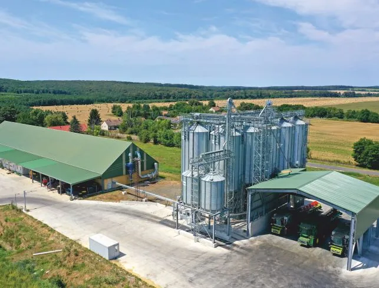

Bak, Zala vármegye · 1994 óta
A szántóföldi növénytermesztők szakmai centruma
Családi tulajdonú magyar vállalkozás: terménykereskedelem, szaktanácsadás és mezőgazdasági termelés.

- 1994
- Egy kis bak-i gazdabolttal indult a cég története.
- 2500 ha
- Mintegy ennyi szántóföldön termelünk Bak és vonzáskörzetében.
- 2/3
- A cégcsoport árbevételének több mint kétharmadát a terménykereskedelem adja.
- 2022
- Ekkor épült új kalászos vetőmagüzemünk Pölöske-Barnakpusztán.
Termelő partnereinknek
Miben segíthetünk?
2017 óta a cégcsoport a terménykereskedelemre, a szaktanácsadásra és a mezőgazdasági termelésre összpontosít.
-
01
Terménykereskedelem
Gabona és olajos magvak értékesítése belföldi és külföldi végfelhasználóknak, gabonalaboratóriummal és Bak környéki tárolással.
-
02
Szaktanácsadás
Határszemle, szakmai konzultáció, rendezvények és fajtabemutatók a megalapozott termelési döntésekhez.
-
03
Szárítás, tisztítás, gépi szolgáltatás
A környékünkön dolgozó gazdáknak igény szerint.
Vetőmag
Fémzárolt kalászos vetőmag, saját termesztésből
Több mint két évtizede szervezünk fajtabemutatókat. A helyben jól teljesítő búza- és árpafajtákat a cégcsoport termeli, és a 2022-ben épült Pölöske-barnakpusztai üzemben készíti ki.
 13 őszi kalászos fajta a 2024-es katalógusban
13 őszi kalászos fajta a 2024-es katalógusban
Történetünk
Gazdaboltból cégcsoport
Kiskereskedelem, integráció, terménykereskedelem, majd saját termelés: három évtized egy helyen, Bakon.
- 1994Egy kis gazdabolt Bakon
- 2000-es évek elejeTerménykereskedelem
- 2007Termelő üzletág
- 2010Növénytermesztés
- 2017. júliusStratégiai fordulat
- 2022Új vetőmagüzem
Karrier
Szakembereket mindig várunk
Agilis, szakmailag jól felkészült, önmegvalósító szakemberek jelentkezését mindig várjuk, akiknek folyamatosan tudunk szakmai kihívásokat biztosítani.
Az aktuális állásajánlatokat a cég karrieroldala tartalmazza.
Állásajánlatok(új lapon nyílik)